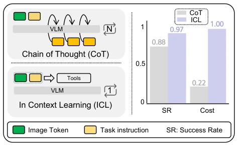
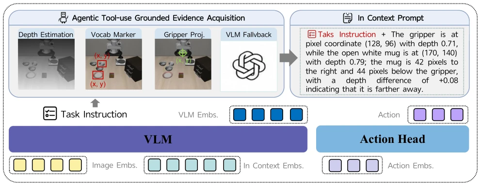
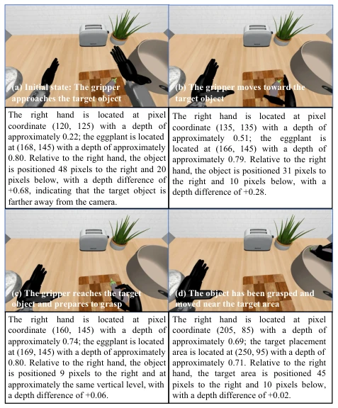
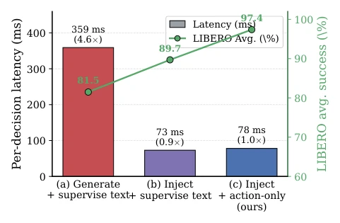
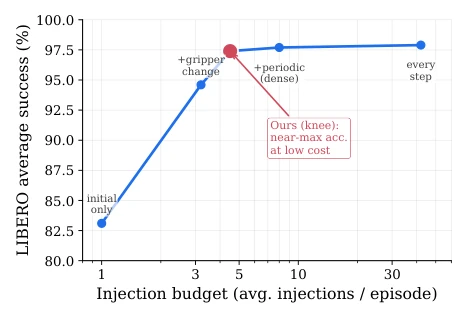
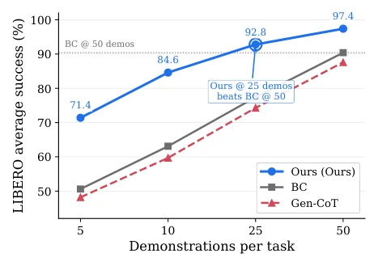
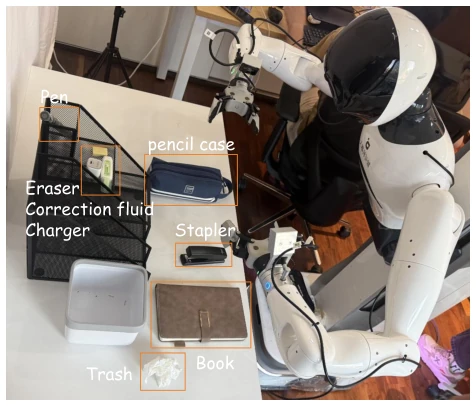
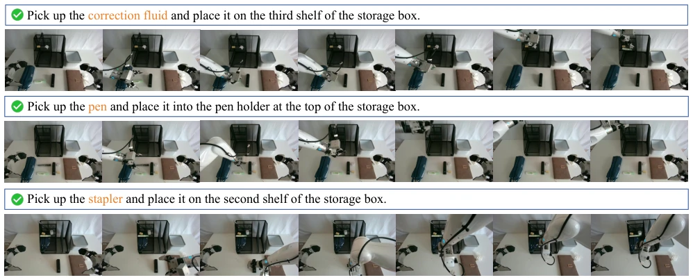
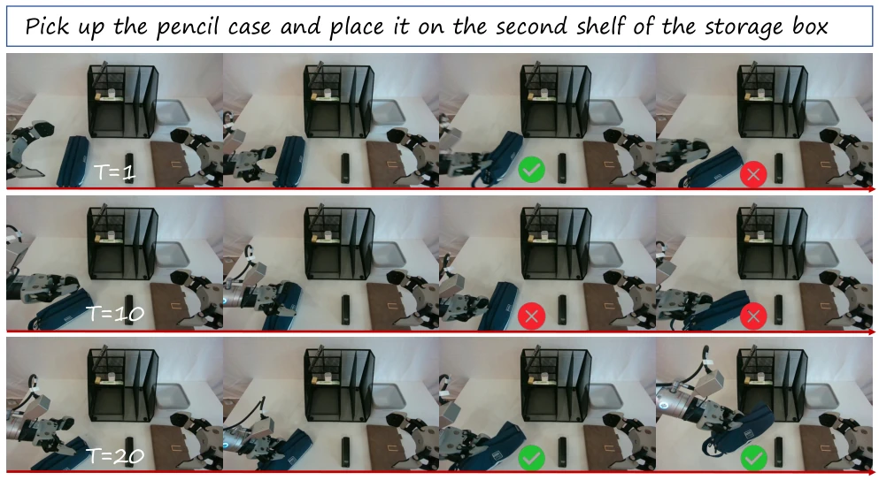
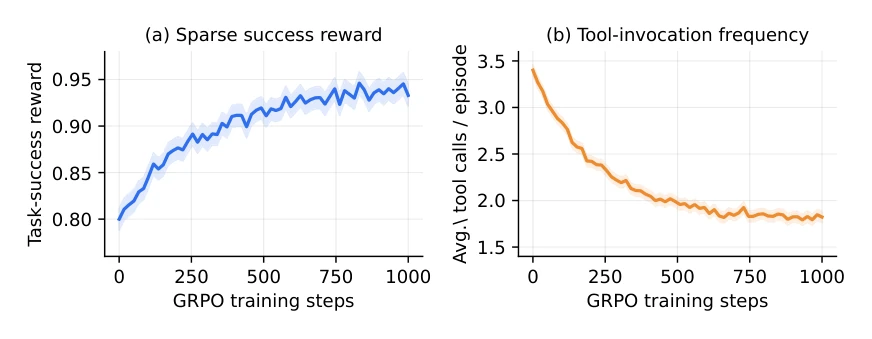

This paper performs a 'grammar correction' surgery on VLA models. Traditional CoT requires robots to write essays before acting, resulting not only in slowness but also a tendency to serious nonsense (hallucinate), even misleading the action head. VLA-Talker flips the table directly: stop generating language, read 'evidence' directly! By using external tools to convert spatial information into text and injecting it into the context, the model learns only how to act, not how to write. Although this approach resembles an 'open-book exam' and relies on external APIs, it effectively decouples reasoning from action, cutting reasoning latency by 4.6 times. However, if the tool fails, is the model rendered blind? This counts as a hidden concern. But considering SOTA and efficiency, this 'read question without answering' strategy is indeed effective, proving VLA needs to understand language rather than generate language.
研究动机Motivation
现有 VLA 主要靠行为克隆（BC），指令一变（比如换说法）就失效，因为模型只是死记硬背，无法理解空间关系。有人想加 CoT 让机器人“思考”，结果发现生成文本会干扰动作头，且推理延迟破坏闭环控制（Lin et al. 2026）。CoT 生成的理由往往无根（ungrounded），甚至误导动作。刘等人（Liu et al. 2023a）指出 VLA 需要的是理解语言而非生成语言。Zhao 等人（Zhao et al. 2025）的 CoT-VLA 虽提升长程规划，但低层控制受损。本文核心动机是：VLA 应像人类一样，先获取事实（看、测），再行动，而非边想边说，从而解决泛化与效率的矛盾。
Existing VLA mainly relies on Behavior Cloning (BC); when instructions change (e.g., rephrasing), it fails because the model just memorizes by rote and cannot understand spatial relationships. Some tried adding CoT to let robots 'think', but found generated text interferes with the action head, and reasoning latency disrupts closed-loop control (Lin et al. 2026). CoT generated reasons are often ungrounded (ungrounded), even misleading actions. Liu et al. (Liu et al. 2023a) point out VLA needs understanding language rather than generating language. Zhao et al. (Zhao et al. 2025) CoT-VLA improves long-horizon planning, but low-level control is compromised. The core motivation of this paper is: VLA should like humans, first acquire facts (see, measure), then act, rather than thinking while speaking, thus resolving the contradiction between generalization and efficiency.

Figure 1: Comparison between free-form CoT generation and ICL for VLA control. CoT requires the VLM to autore- gressively generate N reasoning tokens before acting, while ICL/tool-use injects structured evidence in a single pass. The bar chart shows that ICL matches or exceeds CoT’s success rate (SR) while incurring far lower inference cost
The overall framework VLA-Talker contains three core stages. First is the perception toolchain: utilizing monocular depth estimation, open-vocabulary detectors, and VLM fallback mechanisms, obtaining pixel coordinates and depth relationships between the manipulator and objects at keyframes, forming structured evidence tuples. Second is context post-training: rendering evidence tuples into diverse natural language descriptions (e.g., coordinates, relative positions, depth comparisons), wrapped in `<spatial>` tags and injected into the Prompt. The key innovation lies in supervised masking: Loss acts only on action Tokens, text evidence serves as read-only context, completely eliminating the objective conflict between generating language and action optimization. Finally is trajectory-level RL: using GRPO to optimize the alignment of tool call timing and task success, without dense rewards. This design teaches the model to 'read' rather than 'write', improving generalization to unseen instructions while maintaining low latency.

Figure 2: Overview of the VLA-Talker framework. An agentic tool-use module (depth estimation, open-vocabulary object detection, gripper projection, and VLM fallback) acquires grounded spatial evidence at each keyframe, which is rendered into a diverse, paraphrased in-context prompt. This evidence is injected into the VLM alongside the task instruction and image.

Figure 3: Representative inference-time rollout showing in- context prompts with injected evidence across four stages of a pick-and-place task.
Tested on three benchmarks: LIBERO, RoboCasa-GR1, and SimplerEnv. Baselines include OpenVLA, CoT-VLA, and Gen-CoT (equal evidence generation). The metric is Success Rate (SR). VLA-Talker reaches 97.4% SOTA on LIBERO, over 15% higher than Gen-CoT. Ablation experiments prove 'inject + action supervision' is superior to 'generate + text supervision'. In terms of data efficiency, 25 demonstrations suffice to surpass BC's 50 demonstrations. Latency analysis shows inference speed improved by 4.6 times. Keyframe gating experiments indicate evidence injection is only needed when grasp state changes, balancing accuracy and cost.

Figure 4: Per-decision latency (bars, left axis) vs. LIBERO success rate (line, right axis) under matched evidence. Gener- ating a rationale before acting (a) costs ∼4.6× more latency per decision than in-context injection (b, c). Supervising only action tokens on injected evidence (c, VLA-Talker) attains the highest accuracy at the same low latency, decoupling rea- soning quality from inference cost.

Figure 6: Keyframe gating on LIBERO. Adding gripper- change frames yields most gains, after which performance saturates. Our schedule achieves near-maximal accuracy at low injection cost.

Figure 5: LIBERO data-efficiency curves. VLA-Talker dom- inates across all budgets, with stronger gains in low-data settings; 25 demonstrations already outperform BC trained on 50. Gen-CoT consistently trails BC.

Figure 7: Real-robot deployment on the AgiBot G1 humanoid platform in a desktop manipulation scenario.
其他图片Other Figures

Figure 8: Representative successful executions of VLA-Talker on the AgiBot G1 humanoid, sampled from three different desktop subtasks (top to bottom: correction fluid, pen, stapler).

Figure 9: A representative failure rollout of VLA-Talker on the pencil case subtask, shown as a single continuous episode sampled at three stages of execution (T=1, T=10, T=20). The policy grasps the pencil case correctly and transports it to the vicinity of the correct shelf (row T=1), consistent with the injected evidence being accurate at the reach and grasp stages; however, the case catches on the shelf lip during insertion and the policy spends several timesteps re-attempting the placement (row T=10) before the episode times out without a fully seated placement (row T=20). This is representative of the dominant residual failure mode identified in the error decomposition of Table 15: grounding and object localization are correct, but low-level control precision near contact is insuffic

Figure 10: RL training dynamics. (a) Task-success reward rises steadily from ∼0.80 to ∼0.94 under sparse, group-relative rewards. (b) The average number of tool calls per episode falls from ∼3.4 to ∼1.8, showing that the policy learns to invoke the tool loop only when re-grounding is actually needed rather than on every keyframe.